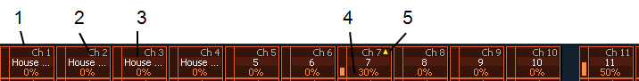
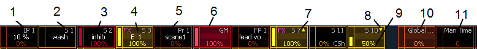

Indicators in the Element Fader Status Display
Each fader is color coded based on its assigned target type. Channel faders are orange. Grandmasters and inhibitive submasters are in red, additive submasters are yellow ,and presets, palettes, global effects, and manual time masters are brown.
The fader status display can be disabled in Setup. See Displays for more information.

- Orange box indicates a channel fader.
- Current channel number controlled by fader.
- Label (channel and target labels will display).
- Current channel level. (Level will display regardless of control from fader or keypad.)
- Up arrow indicates that there is a higher level currently set for the channel and that the fader needs to be raised to match.

- Palette on a fader.
- Current submaster number controlled by fader.
- Red box indicates an inhibitive submaster.
- Effect on a submaster.
- Label (channel and target labels will display).
- Grandmaster on a fader.
- Up arrow indicates that there is a higher level currently set for the channel and that the fader needs to be raised to match.
- Down arrow indicates that there is a lower level currently set for the channel and that the fader needs to be lowered to match.
- Level of submaster currently.
- Global Effects Fader
- Manual Time Master